Pioneering the world's computer science research and education since 1965
Log in
About
Research
Programs
Courses
People
News & Events
Smart telescope unveils the unseen
Stanford Computer Vision Lab invites you to see the other side of the world from your room
September 25
12:30 pm
Gates B01
Context, or, How to trick your users into thinking you're a genius
Darius Kazemi
HCI Seminar
October 7
12:15 pm
Gates 104
BlindBox: Deep Packet Inspection over Encrypted Traffic
Raluca Ada Popa
Networking Seminar
November 3
4:15 pm
Gates 463
Privacy in a Data-Driven World
Roxana Geambasu
Security Seminar
More events